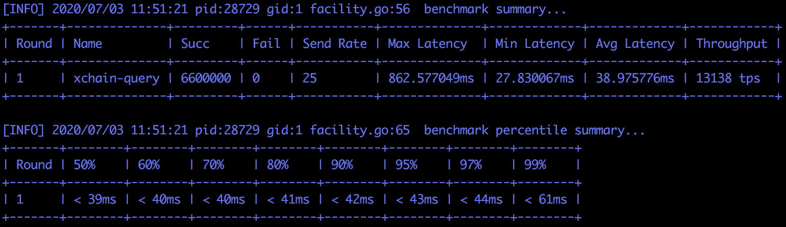
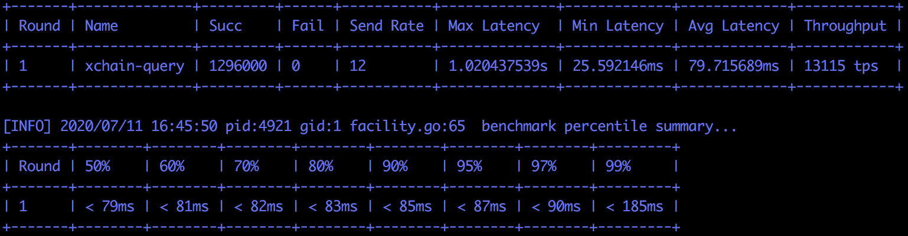

12. xchain性能测试使用文档¶
这里介绍一下使用xbench工具进行xchain性能测试的方案。
12.1. 测试拓扑¶
- xchain 由三个独立机器节点组成，xbench从另1台机器发压到1个node节点

- node节点机器硬件配置
- cpu：Intel(R) Xeon(R) Gold 6148 CPU @ 2.40GHz 160核
- 硬盘：nvme 7.1T*6
- 内存：1510G
- 系统：CentOS release 6.3 (Final)
- 内核：3.10.0_3-0-0-22 x86_64
- 句柄数：10240
- 网卡：Intel Corporation 82599EB 10-Gigabit SFI/SFP+ Network Connection
- 测试环境-网络参数
- 平均时延：21.915 ms
- 抖动：0.166 ms
- 下行带宽：272 Mbits/sec
- 上行带宽：1.24 Gbits/sec
12.2. 环境搭建¶
12.2.1. xuperchain网络搭建¶
- 下载xchain，并编译。
git clone https://github.com/xuperchain/xuperchain.git
cd xuperchain
make
cp -r output node*
# 重复上述步骤，在node1，node2，node3上编译xchain
- 生成矿工地址和网络地址
cd node*
rm -rf data/keys && rm -rf data/netkeys
./xchain-cli account newkeys
./xchain-cli netURL gen
# 重复上述步骤在node1，node2，node3上生成矿工地址和网络地址
- 修改各node port配置：conf/xchain.yaml
node1 如下:
tcpServer:
port: :17101
p2p:
port: 27101
node2 如下:
tcpServer:
port: :17102
p2p:
port: 27102
node3 如下:
tcpServer:
port: :17103
p2p:
port: 27103
- 获取矿工地址和网络
get neturl
node1_neturl: ./xchain-cli netURL preview --port 27101
node2_neturl: ./xchain-cli netURL preview --port 27102
node3_neturl: ./xchain-cli netURL preview --port 27103
get address
node1_address: cat node1/data/keys/address
node2_address: cat node2/data/keys/address
node3_address: cat node3/data/keys/address
- 修改node2、node3的bootnodes配置：conf/xchain.yaml
因为node1为bootnode，地址为步骤3中node1的neturl
p2p:
bootNodes:
- "/ip4/<node1_ip>/tcp/<node1_p2p_port>/p2p/<node1_hash>"
- 修改各node data/config/xuper.json配置
地址为步骤3中node1/node2的address和neturl
"predistribution": [
{
"address": "node1_address",
"quota": "100000000000000000000"
},
{
"address": "node2_adress",
"quota": "100000000000000000000"
}
]
"genesis_consensus": {
"name": "tdpos",
"config": {
"timestamp": "1559021720000000000",
"proposer_num": "2",
"period": "3000",
"alternate_interval": "3000",
"term_interval": "6000",
"block_num": "20",
"vote_unit_price": "1",
"init_proposer": {
"1": [
"nEnyPKZrgSJfhuoccWTUjJnK4o3wEhpiY","Z4aCZJ5yWN3KECdDGbQ6BAtCYkxYLvPwG"
]
}
"init_proposer_neturl": {
"1": [
"/ip4/10.117.131.15/tcp/27101/p2p/Qme97v89162zZw55Nu4pAmuFg1ccabDQeXzZ5exeQzF56X",
"/ip4/10.117.135.37/tcp/27102/p2p/QmPaC7MVdNCQEiyF1ZgLYLM4rKSoVzRLVPdRSyzaaAnjHP"
]
}
}
- 日志配置修改：conf/xchain.yaml
关闭console输出，日志级别调为warn
log:
console: false
level: warn
- 启动底链网络
./xchain-cli createChain --host node*_ip:port
nohup /home/xbench/apps/xuperchain/node*/xchain &
# node1，node2,node3 重复上述步骤启动
- 检查底链网络正常启动
./xchain-cli status -H=node1_ip:port|grep Height
# node1\node2\node3高度一致，说明底链启动成功
- 编译合约
编译counter合约&实名合约：
cd ./core/contractsdk/cpp
./build.sh
cp ./core/contractsdk/cpp/build/counter.wasm /xbench/output/counter.wasm
cp ./core/contractsdk/cpp/build/identity.wasm /xbench/output/unified_check.wasm
12.2.2. 压测环境配置¶
- 建合约账户/合约用户转账
./xchain-cli account new --account 1123581321345589 --fee 1000 -H node1_ip:port
./xchain-cli transfer --to XC1123581321345589@xuper --amount 548900 -H node1_ip:port
- 部署实名合约unified_check和性能测试合约counter
./xchain-cli wasm deploy --account XC1123581321345589@xuper --cname unified_check -a '{"creator": "node1_address"}' unified_check.wasm --fee 155338 -H node1_ip:port
./xchain-cli wasm deploy --account XC1123581321345589@xuper --cname proftestc -a '{"creator":"node1_address"}' counter.wasm --fee 152806 -H node1_ip:port
- 压测bank账户转账
xbench默认压测bank账户dpzuVdosQrF2kmzumhVeFQZa1aYcdgFpN
./xchain-cli transfer --to dpzuVdosQrF2kmzumhVeFQZa1aYcdgFpN --amount 100 --keys data/keys/ -H node1_ip:port
- 分割bank账户utxo
./xchain-cli utxo split -A dpzuVdosQrF2kmzumhVeFQZa1aYcdgFpN -H node1_ip:port -N 100 -P xbench/output/data/ --keys xbench/output/data/keys/
12.3. 同步模式¶
12.3.1. generate转账性能¶
描述：为事先创建N个账号并给他们一笔转账，然后这些账号开始给bank账号1块1块转账，主要测试转账性能
执行命令：
bin/xbench -c conf/gen.jsongen.json: workNum/number:650*5500{
"type": "xchain",
"workNum": 650,
"mode": "local",
"chain": "xuper",
"crypto": "default",
"host": "10.117.135.37:17102",
"nodes": ["10.117.135.37:17102"],
"rounds": [
{
"label": "generate",
"number": [ 5500 ]
}
]
}
性能数据：7025 tps

12.3.2. 查询账户性能¶
描述：压测合约查询性能，部署一个counter合约并increase一个key，然后N个并发查询这个key的值
执行命令：
bin/xbench -c conf/query.jsonquery.json：workNum/number:550*12000‘{
"type": "xchain",
"workNum": 550,
"mode": "local",
"chain": "xuper",
"crypto": "default",
"host": "10.117.135.37:17102",
"nodes": ["10.117.135.37:17102"],
"rounds": [
:
"label": "query",
"number": [ 12000 ]
}
]
}
性能数据：13138 tps
12.3.3. 合约调用性能¶
描述：压测合约执行性能，会事先部署一个counter合约，然后N个并发分别increase各自不同的key
执行命令：
bin/xbench -c conf/invoke.jsoninvoke.json：workNum/number:440*8000{
"type": "xchain",
"workNum": 440,
"mode": "local",
"chain": "xuper",
"crypto": "default",
"host": "10.117.135.37:17102",
"nodes": ["10.117.135.37:17102"],
"rounds": [
{
"label": "invoke",
"number": [ 8000 ]
}
]
}
性能数据：4122 tps

12.4. 异步阻塞模式¶
底链启动方式：
nohup /home/xbench/apps/xuperchain/node*/xchain --asyncBlockMode true &
node1，node2,node3重复上述步骤启动
12.4.1. generate转账性能¶
描述：为事先创建N个账号并给他们一笔转账，然后这些账号开始给bank账号1块1块转账，主要测试转账性能
执行命令：
bin/xbench -c conf/gen.jsongen.json: workNum/number:2680 *1000{
"type": "xchain",
"workNum": 2680,
"mode": "local",
"chain": "xuper",
"crypto": "default",
"host": "10.117.135.37:17102",
"nodes": ["10.117.135.37:17102"],
"rounds": [
{
"label": "invoke",
"number": [ 1000 ]
}
]
}
性能数据：12808 tps

12.4.2. query查询账户性能¶
描述：压测合约查询性能，部署一个counter合约并increase一个key，然后N个并发查询这个key的值
执行命令：
bin/xbench -c conf/query.jsonquery.json：workNum/number:1080*1200{
"type": "xchain",
"workNum": 1080,
"mode": "local",
"chain": "xuper",
"crypto": "default",
"host": "10.117.135.37:17102",
"nodes": ["10.117.135.37:17102"],
"rounds": [
{
"label": "invoke",
"number": [ 1200 ]
}
]
}
性能数据：13115 tps
12.4.3. invoke合约调用性能¶
描述：压测合约执行性能，会事先部署一个counter合约，然后N个并发分别increase各自不同的key
执行命令：
bin/xbench -c conf/invoke.jsoninvoke.json：workNum/number:440*8000{
"type": "xchain",
"workNum": 730,
"mode": "local",
"chain": "xuper",
"crypto": "default",
"host": "10.117.135.37:17102",
"nodes": ["10.117.135.37:17102"],
"rounds": [
{
"label": "invoke",
"number": [ 1200 ]
}
]
}
性能数据：4241 tps